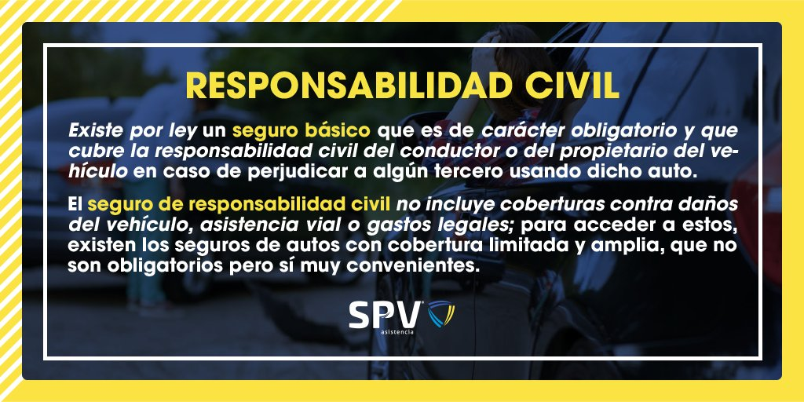

Tranmed S.A., creada en el año 1994 bajo la forma de sociedad anónima presta servicios a compañías aseguradoras, reaseguradoras, aseguradoras de riesgo de trabajo y empresas bancarias en la República Argentina.
Conformado por profesionales del derecho, secundado por un equipo multidisciplinario de consultores, contadores, actuarios, ingenieros, médicos, liquidadores de seguros y personal administrativo altamente capacitado para la asistencia y exigencia de los clientes.
La calidad, especialización y trayectoria de su staff profesional sumado a los exitosos resultados obtenidos y la confiabilidad de sus clientes han colocado a Tranmed como estudio líder en el ámbito de las empresas aseguradoras, reaseguradoras y entidades bancarias.
Misión y Visión
Trabajamos junto a nuestros clientes como socios estratégicos, alineando sus necesidades a objetivos mensurables que generen resultados positivos.
Por sobre la relación comercial, privilegiamos las relaciones humanas y el mutuo respeto.
- Compromiso con la calidad, competencia y eficiencia.
- Profesionalismo.
- Responsabilidad.
- Seguridad, confiabilidad y prudencia.
- Servicio personalizado y conocimiento del cliente y sus objetivos.
- Búsqueda de la excelencia a través del trabajo en equipo.
- Creer en lo que hacemos.
Empresas
Funcionamos como una compañía cuya filosofía se basa en la construcción de relaciones comerciales que perduren a través del tiempo.
Por eso, al día de hoy contamos con importantes clientes que confían en nosotros desde nuestros inicios, y hoy tenemos la satisfacción de poder seguir brindándoles cada día mejores servicios y soluciones a su medida.
Elegir Tranmed implica acceder a un equipo con un alto conocimiento de las necesidades de las gerencias de siniestros de las compañías aseguradoras.
Por la confianza depositada de empresas y aseguradoras en la conciliación de grandes operativos de transacción para la baja de reservas como en el manejo de la administración de fondos fiduciarios.
Por tener absoluto conocimiento del impacto en las reservas de siniestros y juicios.
La experiencia de haber tramitado más de 120.000 siniestros desde la creación de la empresa.
Por generar nuevos y modernos procedimientos en la logística de liquidación de siniestros. más Por la continua actualización de recursos tecnológicos para llevar adelante la administración y gestión de carteras de siniestros.
Bases de letrados actores por jurisdicción, perfil del abogado reclamante, promedios de conciliación.
Por desarrollar bases de jurisprudencia de montos sentenciados a nivel nacional.
Por el desarrollo de nuestros servicios en todo el territorio de la República Argentina.
Por la obtención de bases que nos permiten tomar conocimiento de las reales circunstancias personales, laborales y económicas de víctimas.
Servicios
Tranmed brinda sus servicios a:
- Liquidación | transacción de siniestros extrajudiciales en todo el país
- Mediación asistencia y negociación.
- Litigios asistencia en toda la república argentina
- Servicio de atención y asistencia al asegurado | 24 horas
- Defensa penal del asegurado | asistencia penal | obtención de causas penales
- Recuperos siniestros automotores | cobranza impaga de polizas y franquicias
- Servicio de asistencia al asegurado
- Servicio de consultoría y auditoría
- Liquidación de siniestros
- Gestión de recuperos (extrajudicial | mediación judicial) en todo el país
- Asistencia y representación admistrativa, mediación y judicial
- Gestión de recupero de créditos
- Asistencia integral asegurados de banca
Artículos
Enero 2023 :
Aca vamos a poner articulos, noticias o temas importantes que vamos a ir actualizando todas las semanas y meses, información improntate y notas adjuntas para ver la información fuente, de ser de otro sitio . . .

Febrero 2023 :
Aca vamos a poner articulos, noticias o temas importantes que vamos a ir actualizando todas las semanas y meses, información improntate y notas adjuntas para ver la información fuente, de ser de otro sitio . . .
Marzo 2023 :
Aca vamos a poner articulos, noticias o temas importantes que vamos a ir actualizando todas las semanas y meses, información improntate y notas adjuntas para ver la información fuente, de ser de otro sitio . . .
Abril 2023 :
Aca vamos a poner articulos, noticias o temas importantes que vamos a ir actualizando todas las semanas y meses, información improntate y notas adjuntas para ver la información fuente, de ser de otro sitio . . .
En desarrollo :
Aca vamos a poner articulos, noticias o temas importantes que vamos a ir actualizando todas las semanas y meses, información improntate y notas adjuntas para ver la información fuente, de ser de otro sitio . . .
Contacto
Av. del Libertador 222 Piso 2º B | BUENOAS AIRES - ARG
Tel (54 11) 4322 - 3221 y Lineas rotativas | info@tranmed.com.ar